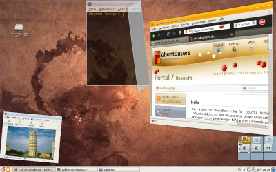
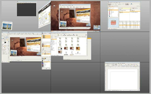

Metisse
Archivierte Anleitung
Dieser Artikel wurde archiviert, da er - oder Teile daraus - nur noch unter einer älteren Ubuntu-Version nutzbar ist. Diese Anleitung wird vom Wiki-Team weder auf Richtigkeit überprüft noch anderweitig gepflegt. Zusätzlich wurde der Artikel für weitere Änderungen gesperrt.
Artikel für fortgeschrittene Anwender
Dieser Artikel erfordert mehr Erfahrung im Umgang mit Linux und ist daher nur für fortgeschrittene Benutzer gedacht.
Zum Verständnis dieses Artikels sind folgende Seiten hilfreich:
"Metisse ist ein 2,5D-Desktop, der auf dem X Window System basiert. [...] Metisse besitzt viele Eigenschaften, die es von dem größeren 3D-Desktop-Projekt Compiz abheben: So können beispielsweise Fenster dreidimensional in alle Richtungen gedreht werden. Auch können Fenster mitsamt ihrem Inhalt verkleinert werden, anstatt nur den Rahmen enger zu ziehen. Metisse legt seinen Schwerpunkt nicht auf optisch ansprechende Effekte wie beispielsweise die „wackelnden Fenster“ in Compiz. Stattdessen haben Funktionalität und Produktivität eine höhere Priorität für die Entwickler." Quelle: Wikipedia
Bildschirmfotos  und Videos bieten einen schönen Überblick über die Funktionen von Metisse.
und Videos bieten einen schönen Überblick über die Funktionen von Metisse.
Installation¶
Metisse ist noch nicht in den Ubuntu-Repositories verfügbar und muss daher selbst kompiliert werden. Beim Kompilieren und Installieren geht man grundsätzlich wie in [1] beschrieben vor. Es gibt allerdings einige Besonderheiten, auf die hier hingewiesen wird. Diese Installationsanleitung wurde mit Nucleo 0.7.3 und Metisse 0.4.1 erstellt.
|  |
| Metisse mit GNOME |
Zuerst installiert man folgende Abhängigkeiten aus den Repositories [2]:
build-essential
checkinstall (universe, [3])
libglu1-mesa-dev
libjpeg62-dev
libfreetype6-dev
xserver-xorg-dev
libgdk-pixbuf-dev (universe)
libxcursor-dev
libxft-dev
gdk-imlib11-dev (universe)
libstroke0-dev (universe)
libpng12-dev
libxpm-dev
libxt-dev
 mit apturl
mit apturl
Paketliste zum Kopieren:
sudo apt-get install build-essential checkinstall libglu1-mesa-dev libjpeg62-dev libfreetype6-dev xserver-xorg-dev libgdk-pixbuf-dev libxcursor-dev libxft-dev gdk-imlib11-dev libstroke0-dev libpng12-dev libxpm-dev libxt-dev
sudo aptitude install build-essential checkinstall libglu1-mesa-dev libjpeg62-dev libfreetype6-dev xserver-xorg-dev libgdk-pixbuf-dev libxcursor-dev libxft-dev gdk-imlib11-dev libstroke0-dev libpng12-dev libxpm-dev libxt-dev
Von hier
lädt man sich Nucleo und Metisse als Archive herunter und entpackt [4] diese.
Zunächst muss Nucleo kompiliert und installiert werden, wobei der Hinweis zur Installation weiter unten zu beachten ist.
Beim Aufrufen von
./configure
sollte man bei Metisse, falls von Hardware und Treibern unterstützt, folgende Parameter übergeben:Parameter Wann aktivieren? --enable-mmxMMX-Unterstützung
wird von allen gängigen, modernen Prozessoren unterstützt--enable-glxGLX-Unterstützung (für das Rendern mittels OpenGL)
aktivieren, wenn man fürgrep glx /etc/X11/xorg.conf
folgende Ausgabe bekommt:Load "glx"
--enable-glx-x86GLX-Unterstützung, optimiert für die x86-Architektur
aktivieren, wenn man zusätzlich einen 32bit-Kernel verwendet
Damit die Installation mit Checkinstall fehlerfrei gelingt, muss man sowohl bei Nucleo, als auch bei Metisse, den Befehl
sudo checkinstall --fstrans=no
verwenden.
Metisse starten¶
Metisse verwendet den Server Xmetisse zur Kommunikation zwischen Xclients, dem Compositor und dem Fenstermanager FVWM. Darum ist das Starten von Metisse ein bisschen anders als bei gewöhnlichen Fenstermanagern.
GDM¶
Um die Metisse über GDM starten zu können, legt mit einem Editor [6] die Datei ~/.xsession an und füllt sie mit folgendem Inhalt:
#!/bin/bash export LD_LIBRARY_PATH=/usr/local/lib Xmetisse -ac -depth 24 -geometry 1280x800 :1 & metisse-start-fvwm killall Xmetisse
Dabei sind Farbtiefe und Auflösung wie gewünscht anzupassen.
Zum Starten von Metisse wählt man jetzt in GDM "Xclient-Skript ausführen" als Sitzung.
Integration in GNOME¶
Um Metisse als Ersatz für Metacity unter GNOME zu benutzen, kann man folgende ~/.xsession (~/.xinitrc) zum Starten per GDM (startx) verwenden:
prefix=/usr/local
# run Xmetisse
export LD_LIBRARY_PATH="$prefix/lib"
geom=`xdpyinfo | awk '$1 == "dimensions:" { print $2 }'`
$prefix/bin/Xmetisse -geometry $geom -ac :1 &
# run gnome-session with fvwm
export DISPLAY=":1"
export PATH="$prefix/bin:$PATH"
export WINDOW_MANAGER="$prefix/bin/metisse-start-fvwm -- -d :0 -- --sm-client-id default0"
export AT_SPI_DISPLAY=":1"
export XKL_XMODMAP_DISABLE=1
eval `/usr/bin/dbus-launch --exit-with-session --sh-syntax`
python /usr/share/jockey/jockey-backend
gnome-session
killall Xmetisse
Wenn man den Weg über startx wählt, kann man den Computer nicht per GNOME-Dialog ausschalten oder neustarten. Darum sollte man lieber GDM verwenden. Dazu wählt man jetzt in GDM "Xclient-Skript ausführen" als Sitzung.
Falls gewünscht kann man noch das FVWM-Panel deaktivieren (da man nun das GNOME-Panel verwendet): Dazu bei laufendem Metisse "Root-Menü -> WM Configuration -> Panel Config -> Just a Pager" anklicken. (Siehe Benutzung.)
Konfiguration¶
Einige Einstellungen, wie die Auswahl des Fenstermanager-Themes, die Transparenz der Fenster und ob ein Panel/Pager angezeigt werden soll, kann man im Root-Menü unter "WM Configuration" vornehmen.
Man kann den Fenstermanager FVWM außerdem weiter über die Konfigurationsdateien anpassen, die im Ordner ~/.fvwm-metisse gespeichert sind. Genaue Informationen dazu findet man in der FVWM-Dokumentation . Welche Einstellungen in welcher Datei getätigt werden, kann man folgender Liste entnehmen:
| Datei | Einstellungen |
| applications | im Root-Menü und Panel angezeigte Anwendungen |
| bindings, bindings-functions | Maus- und Tastaturbelegung |
| fonts | Schriftarten |
| desks | Arbeitsflächen |
| menustyles | Aussehen der Menüs |
| menus | Inhalt der Menüs |
| background | Desktop-Hintergrund, bei der Benutzung mit GNOME kann man hierfür auch GNOME verwenden |
| metisserc | Haupt-Konfigurationsdatei, sollte nicht verändert werden, stattdessen extra verwenden |
| extra | selbst erstellen für alles weitere, wird automatisch nach den anderen Dateien geladen |
Um die neue Konfiguration zu testen, reicht es aus, FVWM über das Root-Menü neu zu starten.
|  |
| die Arbeitsflächenübersicht |
Benutzung¶
In der Standardkonfiguration hat Metisse eine Arbeitsfläche mit neun Viewports. Mit den folgenden Listen und ein wenig Ausprobieren erschließt sich einem die Bedienung ganz von allein.
Belegung der Maus¶
| Aktion | Wirkung |
| Überall | |
| Windows + Mausrad | Arbeitsflächenübersicht an / aus |
| Desktop (zusätzlich Alt drücken, falls Nautilus den Desktop zeichnet) | |
 | Root-Menü |
 | Fensterliste |
 | Fenstermenü |
| Pager | |
| Mausrad | Arbeitsflächenübersicht an / aus |
| Fensterinhalt | |
| ziehen | alle das Fenster überdeckenden Fenster einrollen |
|
Alt + | Fenster bewegen |
|
Alt + | Fensterliste |
|
Alt + | Fenstermenü |
| Strg + Windows + Mausrad | Fenster vergrößern/verkleinern |
| Titelleisten | |
| ziehen | Fenster bewegen |
| , dann ziehen | Fenster temporär bewegen |
| Doppelklick | Fenster maximieren (oder dies rückgängig machen) |
| Doppelklick, dann halten/ziehen | Fenster auf anderen Viewport schicken (Menü) |
| Dreifachklick | Inhalt schrumpfen und Fenster vertikal maximieren (oder dies rückgängig machen) |
| Fenster-Transformationen zurücksetzen |
| Fenstermenü |
| Mausrad | Fenster mitsamt Inhalt skalieren |
| Fensterrahmen | |
| halten/ziehen | Fenster vergrößern/verkleinern, skalieren oder rotieren (Menü) |
| , dann halten/ziehen | Fenster falten oder temporär skalieren/rotieren (an den Ecken nur falten, sonst Menü) |
|
⇧ + | Fenster vergrößern/verkleinern |
|
⇧ + ziehen | Fenster skalieren |
|
Windows + ziehen | Fenster temporär skalieren |
| Doppelklick | Fenster maximieren (oder dies rückgängig machen) |
| Fenster-Transformationen zurücksetzen |
| Fenstermenü |
| Titelleistenknöpfe | |
| Menü-Knopf | |
| Fenstermenü |
| Doppelklick | Fenster schließen |
| Fenster auf anderen Viewport schicken |
| Minimieren-Knopf | |
| / Mausrad | Fenster ins Panel |
| Doppelklick | Schrumpfen-Menü |
| / | Fenster samt Inhalt schrumpfen |
| Maximieren-Knopf | |
| Fenster maximieren (oder dies rückgängig machen) |
| ziehen | Fenster in Richtung des Ziehens maximieren |
| Doppelklick | Maximieren-Menü |
| / | Fenster samt Inhalt maximieren |
| Mausrad | Fenster vertikal maximieren (oder dies rückgängig machen) |
| Schließen-Knopf | |
| Fenster löschen |
| / Doppelklick | Fenster schließen |
| Fenster zerstören |
Tastaturkürzel¶
| Tastenkürzel | Wirkung |
| Windows + F1 | Fenster-Transformationen zurücksetzen |
| Windows + F2 / F3 | z-Rotationen |
| Windows + F4 / F5 | y-Rotationen |
| Windows + F6 / F7 | x-Rotationen |
| Windows + F8 / F9 | aus- / heranzoomen |
| Windows + F10 | Transparenz des aktiven Fensters verringern |
| Windows + F11 | Transparenz des aktiven Fensters erhöhen |
| Windows + F12 | Standard-Viewportansicht wiederherstellen |
| Windows + Bild ↓ / Bild ↑ | aus- / heranzoomen |
| Windows + ← / → / ↑ / ↓ | nach Ranzoomen Bildausschnitt bewegen |
| Windows + Z | aktives Fenster samt Inhalt vergrößern |
| Windows + S | aktives Fenster samt Inhalt verkleinern |
| Windows + C | aktives Fenster zu einer Ellipse deformieren |
| Windows + A | aktives Fenster in z-Drehung versetzen |
| Windows + O | interaktive x-z-Rotation mit der Maus starten |
| Windows + T | Transparenz des aktiven Fensters zwischen 1,0 und 0,7 hin- und herschalten |
| Windows + I | aktives Fenster auf Icon-Größe schrumpfen |
| Windows + X | aktives Fenster auf Bildschirmgröße skalieren |
| Windows + F | Bildschirmfoto machen und als ~/capture.jpg speichern |
| Windows + D | Arbeitsflächenübersicht an / aus |
| Alt + F1 | Root-Menü |
| Alt + F2 | Fensterliste |
| Alt + F3 | Fenstermenü |
| Alt + F4 | aktives Fenster schließen |
| Alt + F5 | aktives Fenster nach vorne holen oder nach hinten bringen |
| Alt + F6 | Fenster-Transformationen zurücksetzen |
| Alt + F7 | aktives Fenster bewegen |
| Alt + F8 | Größe des aktiven Fensters ändern |
| Alt + F9 | aktives Fenster ins Panel |
| Alt + F10 | aktives Fenster vertikal maximieren |
| Alt + F11 | aktives Fenster horizontal maximieren |
| Alt + F12 | FVWM-Konsole starten |
| Alt + Tab ⇆ | Fensterliste |
| Strg + Alt + ← / → / ↑ / ↓ | Viewport wechseln |
| Strg + Alt + Z | zum letzten Viewport |
Fassaden¶
Eines der innovativen Bedienkonzepte von Metisse beinhaltet so genannte Fassaden (frz. façades). Sie ermöglichen es, beliebige Ausschnitte von Fenstern in anderen Fenstern darzustellen und zusammenzufassen. Außerdem ist es möglich, Löcher in Fenster zu schneiden. Zur Illustration sollte man sich User Interface Façades anschauen. Dort gibt es eine sehr instruktive Animation.
Zur Benutzung von Fassaden benötigt man folgende Tasten:
| Aktion | Wirkung |
|
Windows + ziehen (auf Fensterinhalt) | Ausschnitt für Fassade markieren |
|
Windows + (auf Fensterinhalt) | Markierung aufheben |
| auf Markierung | Menü der Fassaden-Operationen |
| (auf den Menü-Knopf in der Titelleiste) | Fassaden-Menü (falls das Fenster eine Fassade ist) |
Die Markierungen kann man auf beliebige andere Fenster oder auf den Desktop (dann wird ein eigenes Fenster für die Fassade erstellt) ziehen. Fassaden kann man im Fassaden-Menü speichern.
Links¶
 - LinuxUser 05/2007
- LinuxUser 05/2007- Erstellt mit Inyoka
-
 2004 – 2017 ubuntuusers.de • Einige Rechte vorbehalten
2004 – 2017 ubuntuusers.de • Einige Rechte vorbehalten
Lizenz • Kontakt • Datenschutz • Impressum • Serverstatus -
Serverhousing gespendet von